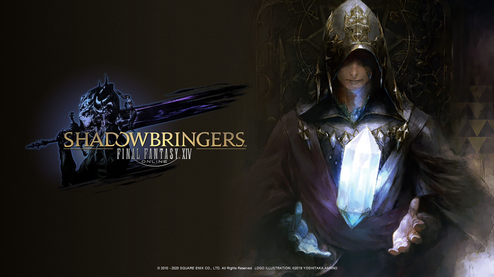
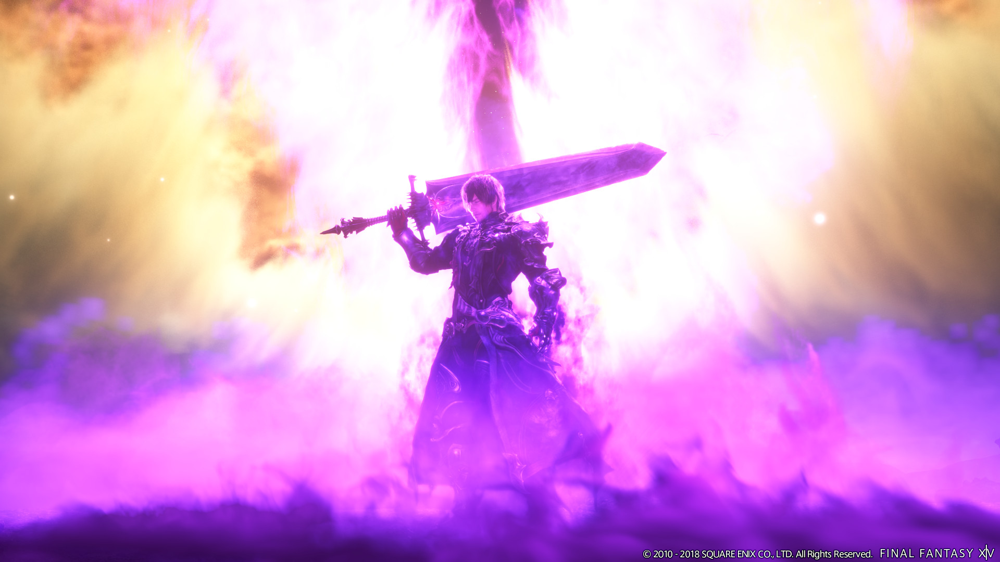
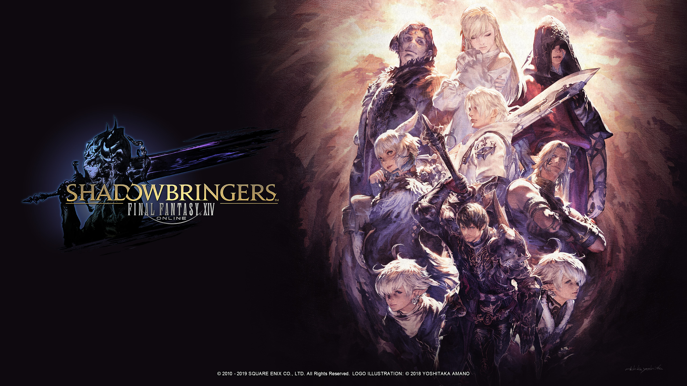
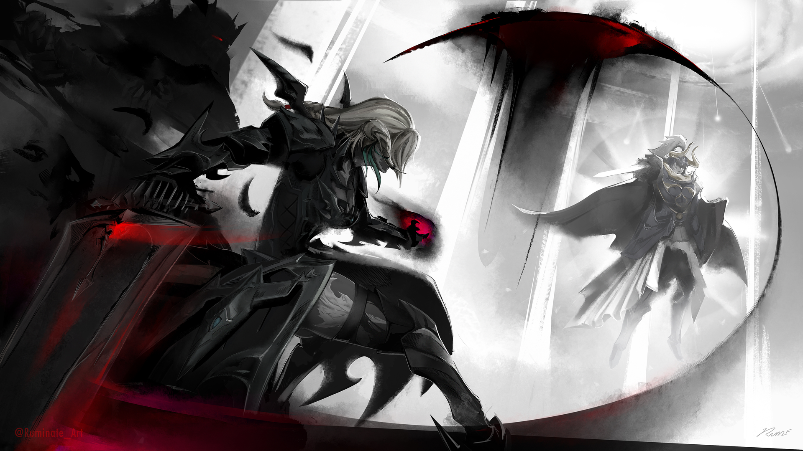

Un nouveau monde
Perte de connaissance
Le Guerrier de la Lumière et Tataru essaient de sauver les héritiers qui sont tous tombés dans le coma à la fin de l'extension précédente. Il se dirige vers la Tour de Cristal, mais une voix mystérieuse (le Cristal Exarque) invoque le Guerrier dans un autre monde, le Premier reflet. Notre héros retrouve ses camarades qui avaient été matérialisés dans ce monde. Il découvre également que son invocateur n'est autre que Graha, un héros qu'il avait rencontré précédemment et qui avait fusionné avec la tour de cristal.
Le guerrier des ténèbres
Le monde dans lequel il se trouve est le monde des guerriers des ténèbres de heavnsward, il est corrompu par une lumière envahissante qui de risque de déclencher une Calamité catastrophique. Pour empêcher cela, le Guerrier de la Lumière devient le Guerrier des Ténèbres, cherchant à rétablir l'équilibre entre la lumière et les ténèbres. Le Guerrier des Ténèbres, aidé d'Alphinaud et Alisaie, combat les Mangeurs de Pêché, des créatures nées de la lumière excessive. Ils libèrent les habitants de Holminster d'un puissant Gardien de Lumière.
Nul n'est méchant
L'ex-empereur Garlean Solus zos Galvus se révèle être l'Ascien Emet-Selch. Il propose une trêve et partage des connaissances sur ses véritables intentions. La quête pour éliminer les Gardiens de Lumière mène le Guerrier des Ténèbres et les héritiers à travers diverses régions, affrontant des défis uniques dans chacune. Après avoir permis à ce monde de retrouver un équilibre entre la lumière et les ténèbres. Les héros découvrent la véritable nature de Hydaelyn et Zodiark. Ils en apprennent également plus sur les asciens et comprennent leurs motivations, ce ne sont pas des êtres foncièrements mauvais, ils veulent juste faire renaître leur monde et sauver leur peuple, ils ne sont pas si différents que des héritiers ou du guerrier de la lumière. Une confrontation inévitable entre notre héros et son nouvel ami Emet démarre, Après un intense combat, Emet-Selch est vaincu et demande que le Guerrier se souvienne de son peuple.
Guerrier de la lumière VS Guerrier de la lumière
Elidibus, un autre ascien, cherche à exploiter le mythe et la foi envers le Guerrier de la Lumière, se transforme pour ressembler à une version idéalisée de ce héros. Cette transformation est une tentative de rallier les habitants du Premier contre notre guerrier de la lumière. Le duel final entre Elidibus et le Guerrier de la Lumière se déroule dans la Tour de Cristal. Elidibus, sous la forme du Guerrier de la Lumière, défie le joueur dans un combat intense. Au cours de cette bataille, il est révélé que le Guerrier de la Lumière possède l'âme d'Azem, le Quatorzième Siège de la Convocation, ce qui le lie encore plus profondément à l'histoire ancienne du monde et aux Ascians. Après un combat difficile, le Guerrier de la Lumière réussit à vaincre Elidibus. Cette victoire marque la fin de l'influence d'Elidibus sur le Premier reflet, Graha peut ensuite renvoyer tous les héros et lui même dans leur monde d'origine.